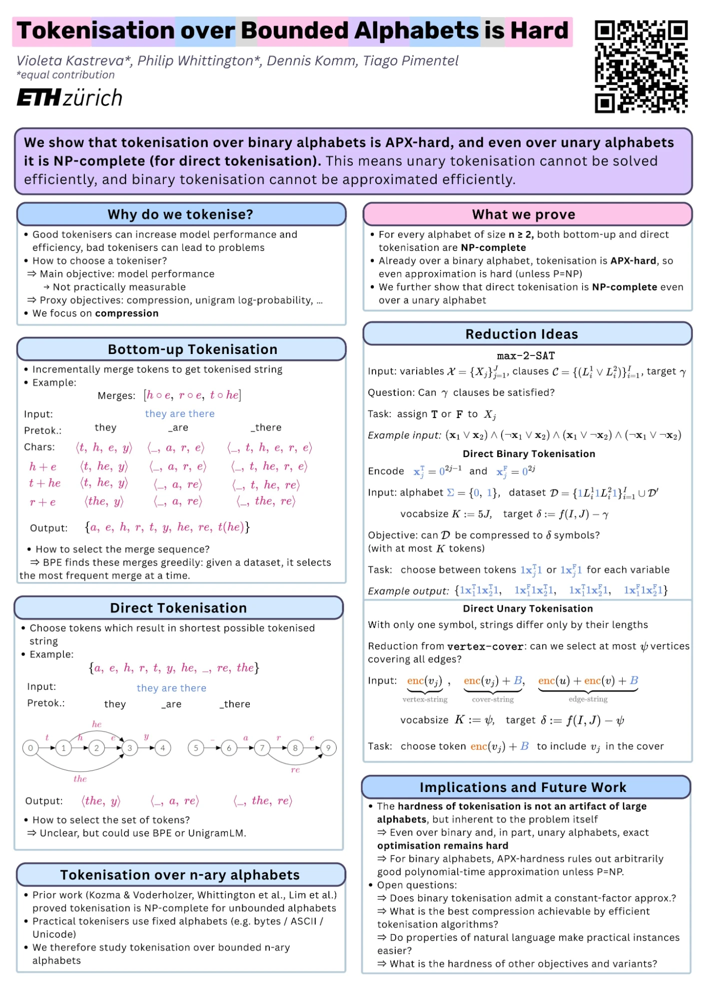

Two ways to tokenise
A tokeniser maps a character-string $\chars \in \Sig^*$ to a subword-string $\subs \in \Voc^*$. We judge tokenisers by compression: the fewer subwords needed to encode a dataset, the better.
Bottom-up tokenisation $\toku$
apply merges in orderA merge sequence $\merges = \langle \tk{m_1}, \dots, \tk{m_K}\rangle$ is applied left-to-right, one merge at a time. BPE picks each merge greedily as the most frequent adjacent pair. Drag $K$ to watch it.
Direct tokenisation $\tokd$
shortest path in a latticeA vocabulary $\Voc$ applied optimally: $\tokd[\Voc](\chars) \defeq \argmin_{\subs \in \Voc^*} |\subs|$ s.t. $\subs$ spells $\chars$, i.e. a shortest path through the vocabulary matches. Applying a vocabulary is easy; choosing it is the hard part. Tap candidate tokens to build your own, or drag $K$ to search every vocabulary of that size.
Compressed length vs. compression reduction
why the objective matters for approximation
Both rank tokenisers identically, but approximation ratios differ. We use compressed length $\G_\ell$: it is the sequence length a model actually pays for.
Hard, all the way down to one symbol
Prior work proved tokenisation NP-complete over unbounded alphabets. Real tokenisers use fixed ones (Unicode, bytes, bits), so we ask the question over $n$-ary alphabets with $|\Sig| = n$.
Hardness map
objective $\G_\ell$| Unary$n = 1$ | Binary$n = 2$ | Bounded$n \geq 3$ | Unbounded$n \to \infty$ | |
|---|---|---|---|---|
| Direct $\tokd[\Voc]$ | NEWStrongly NP-completeThm. 5 | NEWAPX-hard$\rho \lt 1.000002$ impossible · Thms. 1–2 | APX-hardinherited from binary | NP-completeWhittington et al. 2025; Lim et al. 2025 |
| Bottom-up $\toku[\merges]$ | Open | NEWAPX-hard$\rho \lt 1.0000001$ impossible · Thms. 3–4 | APX-hardinherited from binary | NP-completeKozma & Voderholzer 2024; Whittington et al. 2025 |
| OPE $\tokd[\tk{\mathcal{S}_{\mathbf{m}}}]$ | NEWWeakly NP-complete(at least) · Thm. 6 | AnalysedKozma & Voderholzer 2024 |
Why small alphabets give the strongest result
An $n$-ary instance is also a valid $n'$-ary instance for any $n' \gt n$, so hardness propagates upward (Fact 1). For unary this needs strong NP-hardness, since the inputs are strings, not numbers.
The constants $1.000002$ and $1.0000001$ come from Berman & Karpinski's explicit gap and are not optimised. The point is qualitative: no PTAS. Whether any constant-factor approximation exists is open.
Max-2-SAT, written in zeros and ones
To show binary tokenisation is hard, we take a problem already known to be hard and translate every instance of it into a tokenisation instance with the same answer.
The source problem: 3-OCC-MAX2SAT
APX-hard (Berman & Karpinski, 1999)- Input
- Boolean variables $X_1, \dots, X_J$ and $I$ clauses, each an OR of two literals, $(L_i^1 \lor L_i^2)$, where a literal is $X_j$ or $\neg X_j$. Every variable occurs in exactly three clauses, so $2I = 3J$. A target $\gamma$.
- Question
- Is there a true/false assignment that satisfies at least $\gamma$ clauses?
- Why this one
- Not only is it NP-hard to answer, it is hard to even approximate the maximum number of satisfiable clauses. Because each variable occurs only three times, our gadgets stay constant-sized, which is what lets this approximation hardness carry over to tokenisation.
The translation encodes each truth value as a run of zeros, $\xT{j} = \cc{0}^{2j-1}$ and $\xF{j} = \cc{0}^{2j}$, and builds a dataset in which choosing tokens is choosing an assignment.
3-OCC-MAX2SAT → binary direct tokenisation
$K = 5J$, $\delta = 329J + 3I - \gamma$The multiplicities force every optimal tokeniser to pick exactly one of $\tk{1}\txT{j}\tk{1}$ or $\tk{1}\txF{j}\tk{1}$ per variable: its truth value. A clause-string then costs 2 symbols if satisfied, 3 otherwise.
Assignment (tap to flip)
Clauses
Vocabulary
Dashed = set by the assignment. Remove tokens (×) or add your own and try to beat the optimum.
Dataset, tokenised by $\tokd[\Voc]$
From NP-hard to APX-hard
L-reduction + gap
L-reduction. Any tokeniser can be made sat-compliant by cost-nonincreasing swaps; reading off its assignment gives $\mathrm{OPT}_{\text{sat}} - \#\text{sat} \le \G_\ell - \mathrm{OPT}_{\text{tok}}$ ($\alpha = 444$, $\beta = 1$). As 3-OCC-MAX2SAT is APX-complete, binary tokenisation is APX-hard.
Gap. With $I = 2016n$ clauses it is NP-hard to tell $\ge (2012-\varepsilon)n$ from $\le (2011+\varepsilon)n$ satisfiable clauses (Berman & Karpinski). Through the reduction, using $3J = 2I$:
The bottom-up variant
$K = 10J$, $\delta = 5398J + 575 + 3I - \gamma$
Merges are order-sensitive, so the gadget gets five subdatasets, each multiplicity dominating everything below it:
The forward merge sequence has six phases; only two depend on the assignment:
Every sat-compliant direct tokeniser can be realised by such a merge sequence with equal compression, so the direct analysis carries over and gives $\rho \gt \frac{7258949}{7258948}$.
One symbol is still enough
Over $\Sig = \{\cc{a}\}$ strings are just lengths: tokenising $\cc{a}^{\ell}$ means writing $\ell$ as a sum of as few vocabulary lengths as possible. This time we translate from a classic graph problem.
The source problem: vertex cover
NP-complete (Karp, 1972)- Input
- A graph with vertices $v_1, \dots, v_J$, a set of $I$ edges, and a budget $\psi$.
- Question
- Can we pick at most $\psi$ vertices so that every edge touches at least one picked vertex?
- Why this one
- It is one of Karp's original 21 NP-complete problems, and its structure (a budget of picks, each of which “serves” several edges) maps directly onto a budget of tokens, each of which shortens several strings.
Vertex cover → unary direct tokenisation
$K = J + 1 + \psi$, $\delta = 3J + 2I + 1 - \psi$With $N = (J + I + 1)^4$, let $\enc(v_j) = j + j^2 N + j^3 N^2$ and $\cc{B} = N^4$. The dataset holds vertex-strings $\enc(v_j)$ and $\cc{B}$, cover-strings $\enc(v_j) + \cc{B}$, and edge-strings $\enc(u) + \enc(v) + \cc{B}$. In base $N$ the digits never interact, so an edge-string costs 2 tokens exactly when an endpoint's cover-string is in the vocabulary.
Showing the best tokeniser for this budget. Tap vertices to choose your own.
Every string as base-$N$ digits ($N = $ 279,841) and its tokenisation
Unary OPE and addition chains
weak NP-hardness
- Input
- Target numbers $t_1, \dots, t_J$ and a length $\zeta$.
- Question
- Is there a sequence starting at $1$, where each new number is the sum of two earlier ones, that contains every target and has at most $\zeta$ steps?
- Known
- NP-complete when the targets are written in binary (Downey, Leong & Sethi, 1981).
Optimal pair encoding uses merges only to build a vocabulary, then applies it optimally. Compressing every $\cc{a}^{t_i}$ to a single token with $K$ merges is exactly an addition chain of length $K$ hitting every target:
Targets $\{5, 7, 12\}$ via $1, 2, 3, 5, 7, 12$: five merges.
Addition chains are NP-complete only for binary-encoded numbers, so this gives weak NP-hardness. Unary bottom-up tokenisation with in-order merges remains open.
What this means
- Hardness is inherent to tokenisation, not an artifact of large alphabets.
- For binary alphabets, no polynomial-time algorithm approximates arbitrarily well unless $\Ptime = \NP$.
- This is why BPE and UnigramLM are heuristics; provably good approximation algorithms are the way forward.
Is binary tokenisation in APX, i.e. does any constant-factor approximation exist?
What compression can efficient algorithms guarantee?
Does natural language make practical instances easier?
How hard are other objectives, and unary bottom-up?
ICLR 2026 poster

BibTeX
@inproceedings{kastreva2026tokenisation, title = {Tokenisation over Bounded Alphabets is Hard}, author = {Kastreva, Violeta and Whittington, Philip and Komm, Dennis and Pimentel, Tiago}, booktitle = {The Fourteenth International Conference on Learning Representations}, year = {2026}, url = {https://openreview.net/forum?id=Xhf9YqwlM4} }